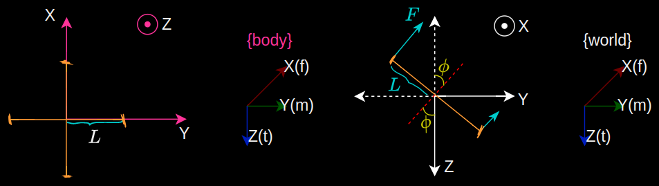
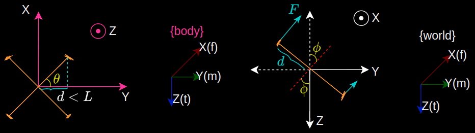

A force acting perpendicular to the axis of rotation at some distance from it, produces a moment about the rotation axis causing the vehicle to rotate.
Here, each rotor applies a vertical force along $Z_W$ producing a moment about $X_W$.
